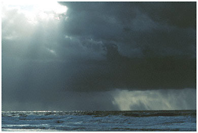

The Ethics of Evolution vis a vis the Creationist theories from the world's religions
Published on Darwin Day (February 12, 2006)

Picture courtesy :
http://www.utexas.edu
Many years ago as a boy in India, I clambered out onto the terrace of my grandparents’ home cum optical showroom to try something based on a history lesson that we had had that day. We had been taught about Archimedes’ burning of the Persian fleet using solar reflectors and my teacher had told us that we could burn paper with a convex lens in a similar way. I had picked up a +10 Diopter lens out of a huge box in the shop and went out in the intense Madras heat, still in my school uniform, with a piece of cardboard trying to concentrate the sun’s rays through the lens onto the board and burn it. It took some time but I could see a black spot appear where the light was focused, and a slow wisp of smoke rose from there as the light burned through the board. It was a breathtaking moment as I tried to slowly write my name onto the board with light from the lens in my hand and as the first three letters formed, I could feel my pulse quickening with excitement at what I was doing.! That was when I heard my mother calling out from the kitchen, which adjoined the terrace, “What are you doing in the sun?” Without looking up, I shouted excitedly, “I’m writing my name on this board with a lens and sunlight.” Before I knew what, she rushed up to me, grabbed my hand and made me stop. I looked up bewildered, about to ask what I had done wrong, when a stinging slap landed on my face. I remember her words that followed the slap very precisely, and, though a translation from Gujarati into English would bring the essence out , she told me “The Sun god would be angry.” With tears in my eyes, I told her, “He would not have helped the Greeks win the war against the Persians if he was angry at his rays being used,” ready for another slap which promptly came. I learned then that questioning myths could be dangerous, I would learn that doing this had cost many their lives.

Pic: Sun God in brass as depicted
in Hindu mythology.
Courtesy :
www.shalincraft-india.com/ gifts/various.html
I did find myths fascinating, though. Every slap from a mother in India guarantees a big hug from a grandmother. And, my grandmother’s way of calming us down was either to sing when we were very young, or, when we grew older, to tell us stories. We all had our favorites, from a wide repertoire that she was always happy to reproduce stories from, and I enjoyed her stories enough to study Literature at University many years later, but that is another story. When Mukto Mona made a call for Darwin Day articles, I could easily decide not to write on scientific issues for they are not what I have studied. Living in the USA, a country where a monumental battle between the Judaeo-Christian myths of creation (and their latest incarnation “Intelligent Design”) was brewing, it was not at all difficult to look at myths in different cultures as a subject.
There is a wealth of information on myths on hundreds of websites in different countries. As would be expected, there are those who look at myths as a kind of oral “history” that was written down recently in human civilization, and there are those to whom the myths mean only enjoyable fiction, period pieces from different eras that illustrate the development of human thought. As it was necessary to take myths in their “essence,” I decided to take them from the many “mystical” websites that profess them as fact. Taking interpretations from skeptical or independent authorities could leave a charge of atheist preconceptions at my door. And, websites that believed that these myths were predictions of a future, had them in greater detail and with more color anyway.
The Judaeo-Christian Creation Myth is the first to be considered as it is the myth most in conflict with the ideas of Charles Darwin, the scientist whom this page commemorates. It is simple, quoted verbatim from the Book of Genesis in the Bible:
In the beginning God created the heaven and the earth. And the earth was without form, and void; and darkness [was] upon the face of the deep. And the Spirit of God moved upon the face of the waters. And God said, Let there be light: and there was light. And God saw the light, that [it was] good: and God divided the light from the darkness. And God called the light Day, and the darkness he called Night. And the evening and the morning were the first day. And God said, Let there be a firmament in the midst of the waters, and let it divide the waters from the waters. And God made the firmament, and divided the waters which [were] under the firmament from the waters which [were] above the firmament: and it was so.

Pic: In the beginning God, created the heavens and the
earth. Courtesy :
http://departments.sis.edu.hk/re/Assignment%20Y7%20Genesis.htm

Pic: Michelangelo's "Expulsion from the Garden
of Eden" in the Sistine Chapel
Courtesy:
http://www.faculty.de.gcsu.edu/~dvess/ids/fap/onealone.htm
How different is this from the Apache myth about creation:
In the beginning nothing existed -- no earth, no sky, no sun, no moon, only darkness was everywhere. Suddenly from the darkness emerged a thin disc, one side yellow and the other side white, appearing suspended in midair. Within the disc sat a small bearded man, Creator, the One Who Lives Above. As if waking from a long nap, he rubbed his eyes and face with both hands.
When he looked into the endless darkness, light appeared above. He looked down and it became a sea of light. To the east, he created yellow streaks of dawn. To the west, tints of many colors appeared everywhere. There were also clouds of different colors.
Or, whom would you think believe in this myth…
For millions upon
millions, countless years was spread darkness,
When existed neither earth nor heaven, but only the
limitless Divine Ordinance.
Then existed neither day or night, nor sun or moon;
As the Creator was absorbed in an unbroken trance.
Existed then neither forms of creation, nor of speech;
neither wind nor water.
Neither was creation or disappearance or transmigration.
Then were not continents, neither regions, the seven seas,
nor rivers with water flowing.
Existed then neither heaven or the mortal world or the
nether world;
Neither hell or heaven or time that destroys.
Hell and heaven, birth and death were then not--none arrived
or departed.
(This is from the Sikh story of creation)
It was obvious that our ancestors, the world over, had put considerable thought into trying to understand how the world and life had come about. And, early man, with an imagination unfettered by learning or science, had come up with what must have seemed logical to him considering his environment and circumstances. At a time when he lived in mud houses and relied on animal powered transportation, it must have seemed impossible for him to conceive of many things that we regard as routine today - flying, hence early mankind had to create angels that could fly at first and mythical flying devices, life was short due to disease and constant war and violence in a barbaric era, hence the suffering of day to day life was managed with stories of a happy afterlife. And, when it came to how he and all other creatures came to be, man had to create a divine creator who created everything that existed. He could not imagine what such a creator could be like, so he made sure that the crea! tor was someone in his own image. The Semitic religions explicitly said this, while Hinduism, and the religions of ancient Egypt, Greece and Rome did not say so in as many words, but had their own rich mythologies with gods as warring kings and courts, concubines, lackeys, jesters and all the trappings of the life of the ruling classes in their day.
Pic: Hindu creation myth, courtesy: http://departments.sis.edu.hk/re/Assignment%20Y7%20Hindu%20Creation.htm
It took time for the myths to change - scriptures could not be altered as religions did not allow them to be. They were considered absolute and there was no question of even allowing their interpretation in some cases as several unfortunate heretics were to learn down the centuries. And yet, the progress in human knowledge proved unstoppable. James Hutton’s geological work and Charles Darwin’s research into evolution would soon provide, for the first time, an accurate description of how life had evolved, and, the quiet manner in which the scientists put their facts forward still terrified the daylights out of the religious bodies, the church in particular. The idea that a god did not create man in his own image minimized the importance of the church, and, indeed, exposed its wealth and power as that of an extortionist body which kept followers enslaved and constantly extracted money from them. It also told people, quite clearly, that the teachings of the religious book that! most people in the world followed, the Christian Bible, were incorrect from a factual perspective. Earlier, the Catholic church had taken on and forced Galileo to recant his heliocentric theory of the solar system. But now, in England, a nation that had grown immensely powerful in defying Rome and its Spanish and later French enforcers, was this new theory that no Christian church could do anything about. The Anglican church tried, initially, to confront Darwin and his fellow scientists with Bishop Sam Wilberforce asking Thomas Huxley whether he was descended from
monkeys on his grandfather's side or his grandmother's side. Huxley’s reply was scathing, “I would rather be descended from an ape than from a cultivated man who used his gifts of culture and eloquence in the service of prejudice and falsehood." Newspaper cartoons of the time joked that Huxley had said that he would rather ! be an ape than a bishop. Never again would any church try to take the evolutionists on. They would use devious methods to try to squash evolution, first, spreading canards about Darwin’s supposed death bed conversion to Christianity, then trying to use legislation to prohibit teaching evolution, and, finally, coming out with the completely fraudulent religious theory of “Intelligent Design” and trying, again, to make this a mandatory subject of study in high school in the USA instead of evolution. And, the problem was not restricted to the church alone - several Arab countries, especially countries of the Gulf Co-operation Council ban the teaching of evolution in their schools, though, in a concession to foreign expats working there, they allow expat schools to teach the science.
Pic: According to Egyptian mythology, the Sun god Ra had four children. In this painting his son Shu stands on another son, Geb, who became the Earth. Shu, god of the air, raises up Ra’s daughter Nut, who became the sky. courtesy : http://encarta.msn.com/media_941505071_761552103_-1_1/Egyptian_Creation_Myth.html

Though the last pope, John Paul II finally conceded that evolution was the right scientific theory and that the Biblical story of creation was wrong, and while his successor Benedict agrees with him, both have made a big show of talking about the “moral” aspect of the story of creation. As if, the torturing of millions of non Christians down history, something dictated by the churches in the past based on their interpretation of what was in the Bible was “moral” while the soft, careful scientific investigations of the biologists who have worked further to study the implications of Darwin’s theory and supporting evidence were “immoral” in some way. As if, the teaching of scientific fact as in the teaching of the theory of evolution was factually correct, but, somehow, “immoral,” this being an indirect way of showing acceptance of the science of evolution while hinting that its teaching needs to be tempered somewhat, political doublespeak at its most efficient.
Religion requires that its texts be followed in toto, that any criticism of them is heresy. Most scriptures have dire warnings against anyone who would want to go against them, and, very often, because of the absence of a heaven or hell, religions’ followers take matters into their hands to kill, torture or maim those who would oppose their fundamentalist views. In situations where they cannot, quite, do this, as in the educational arena of the USA, they attempt to use a legislative sledgehammer to smash advocates of science down. The fact is that scientific research is not stationary, it cannot be, because of the scientists’ need to work hard to correlate their theories and assumptions to new evidence that may come up. In this, the scientist’s zeal to learn, educate and inform is matched by the religious fundamentalists’ zeal to confuse, obfuscate and lie. A knowledge of how we came about by a random process confers great responsibility on us. A chance series of chemical r! eactions that created life mean that mistakes could be made that end it - it is the knowledge of evolution that inspires a respect for the earth, the environment that we live in, of life itself. Not for the scientist or the humanist are the fears of a mythical hell or the rewards of an equally mythical heaven necessary to lead a “moral” life. Since no god exists, the onus for living an ethical life is on the individual. And, since there is no heaven, there is compelling reason why we need to celebrate the beauty of life and enjoy the pleasures that derive from knowing how it came about. Darwin Day becomes, in effect, a reason to celebrate this knowledge vis a vis festivals that are driven by superstition, barbarity and forced ignorance.
Mehul Kamdar from Chicago is currently moderating Mukto-Mona forum. He was the editor of The Modern Rationalist under late M D Gopalakrishnan and associated with various rationalist movements. He can be reached at mehulkamdar@yahoo.com